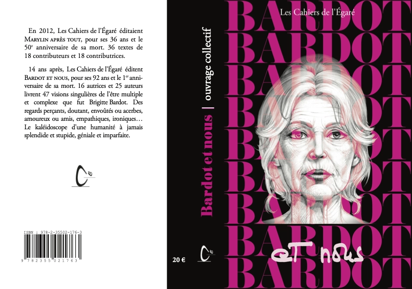

BARDOT et nous

pages, 14X20,5 PVP 20€Bardot et nous, genèse et déroulementIl y eut, le 14 octobre 2014, le retour de BrunoRicard à l’éditeur : J’ai réfléchi à votre futur projetd’ouvrage sur BB, c’est une très bonne idée.Il y eut, le 25 octobre 2025, l’émergence d’unprojet 2026 autour de Brigitte Bardot.Il y eut, dans la nuit du 19 au 20 novembre 2025,le rêve qui offrit les mots Initials BB, EssentialsSanctuary.Il y eut un premier appel à textes, le 29 novembre2025.Puis tout s’accéléra.Il y eut la mort de Brigitte Bardot, le 28 décembre2025.Il y eut le refus d’un hommage national, le31 décembre 2025.Il y eut les obsèques dans l’intimité, le 7 janvier2026.Il y eut un 2e appel à textes, le 15 janvier 2026.Il y eut la messe-hommage à l’église Saint Roch àParis, le 28 janvier 2026.Il y eut l’hommage hué à la 51e cérémonie desCésar, le 26 février 2026.Il y eut l’ignorance à la 98e cérémonie des Oscars,le 16 mars 2026.Il y eut 46 textes proposés par 23 contributeurs sur92 sollicités, le 31 mars 2026.Elle fut vivante avec sa Biographie symphoniqueau Palais des Congrès, le 2 avril 2026.Elle fut présente, à sa manière, au 79e Festival deCannes (12 au 23 mai 2026) : le maire inaugura laplage Brigitte Bardot.Son Portrait vert par Andy Warhol ne fut pasadjugé aux enchères à New York en mai 2026 pour16,7 millions de dollars.Livre mis à l’impression, le 1er juillet 2026, sorti despresses, le 15 août.Le Revest, 18 juin 2026.
ISBN 978-2-35502-176-3